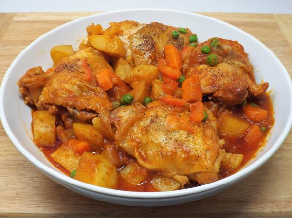

Afritada

Ingredients:
- 1 whole chicken, cut into parts
- 1-2 tbsp Maggi Magic Mix
- 1 pack caldereta/afritada mix
- salt
- pepper
- 2 tomatos, cut into chunks
- 2 red onions
- 3 garlic pieces
- 3-4 tbsp oil
Instructions:
- Saute onions and garlic in oil or butter.
- Add tomatos and saute until tomatos are soft.
- Add chicken.
- Cook until meat turns brown and juices are extracted. Add water if juices are not enough.
- Mix in contents of caldereta/afritada mix. Simmer for 10 minutes in medium-low heat.
- Serve and enjoy.